Multi-page color highlighting editor for CSS
files with integrated design and preview page.
- Right-click on CSS file and select Open With > CSS
Editor
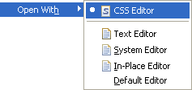
- Color highlighting for style names, attributes and
values
- Design tab shows list of styles, style source and style
preview
- Design tab allows rules to be added, removed, renamed,
edited and sorted
- Changes in CSS rules are reflected immediately in any
open GWT window when the CSS file is saved
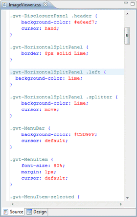 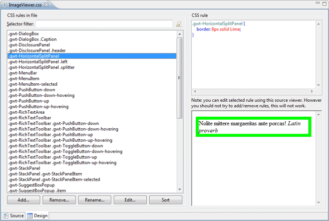 |
CSS Style Name Property
- Select a style name from the drop down list.
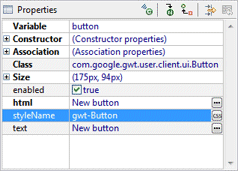
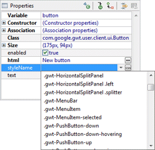
- Click the
button
to access the CSS Style Editor and choose or create a
CSS style for the selected widget.
|
CSS Style Editor
Dialog for setting the GWT
styleName property
- Select an existing style defined in any local CSS file
- Filter list of CSS rules
- Text of selected CSS rule shown at upper right
- Preview of selected CSS rule shown at lower right
- Add new rules to the list using the Add... button
- Remove rules using the Remove... button
- Rename rules using the Rename... button.
Duplicate rule names are not allowed
- Edit the selected style using the Edit...
button
- Sort all of the styles in the CSS file using the Sort
button
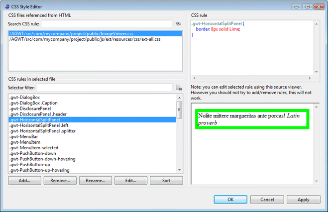
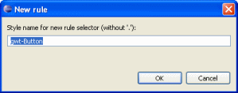
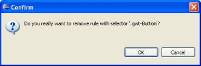
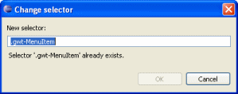 |
CSS Rule Editor
- Tabs for Font, Background, Box,
Border, Text and Other settings available
on left
- Preview of current style settings on right
- Clear button to reset all values to defaults
Font tab for editing font properties
- Specify one or more font families using "..."
button
- Select and order multiple generic or installed fonts
using the Edit Font List dialog
- Specify the font size in pixels, points,
in, cm, mm, picas, ems,
exs and %
- Specify style, variant, stretch and color
- Specify additional decorations
- Clear any entry using Clear button
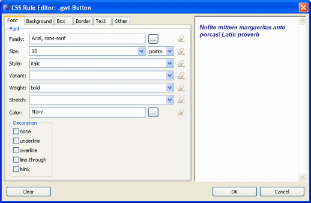
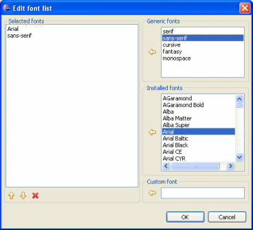 |
Background tab for editing
background properties
- Set the background color and image
- Access the Color Chooser dialog via the "..."
button
- Click a color to select it
- Access named HTML and SVG colors via the Named Colors
page
- Show named colors sorted by Tone, Hue,
Saturation, Lightness and Name
- Access web safe colors via the Web Safe Colors
page
- Show web safe colors sorted by Tone, Hue,
Saturation and Lightness
- Access system colors via the System Colors page
- Clear any entry using Clear button
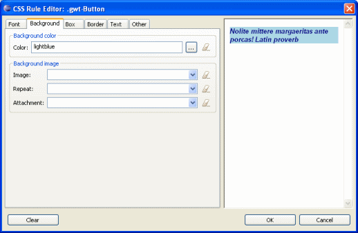
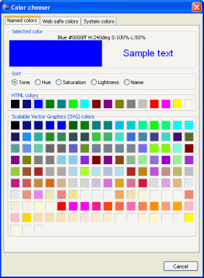
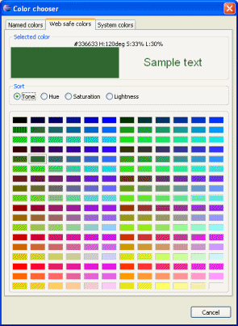
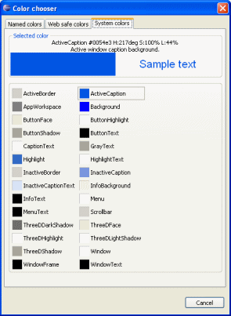 |
Box tab for editing box
properties
- Set margin and padding options for each side: Top,
Bottom, Right and Left
- Specify the margin and padding values in pixels,
points, in, cm, mm, picas,
ems, exs and %
- Copy the Top value to the Bottom, Left
and Right entries using Copy button
- Clear any entry using Clear button
 |
Border tab for editing
border properties
- Set width and style options for each side: Top,
Bottom, Right and Left
- Specify the width values in pixels, points,
in, cm, mm, picas, ems,
exs and %
- Specify a variety of different border styles types
- Specify the color of each side
- Copy the Top value to the Bottom, Left
and Right entries using Copy button
- Clear any entry using Clear button
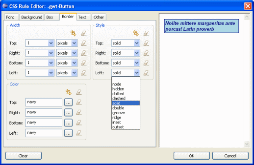 |
Text tab for editing text
properties
- Set horizontal and vertical alignment values
- Specify the vertical alignment values in pixels,
points, in, cm, mm, picas,
ems, exs and %
- Specify letter and word spacing and line height
- Specify flow values for indent, white space, direction
and transform
- Clear any entry using Clear button
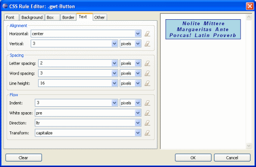 |
Other tab for editing other
properties
- Specify table values for border collapse and table
layout
- Specify printing page values for break before and after
- Specify cursor used for the user interface
- Clear any entry using Clear button
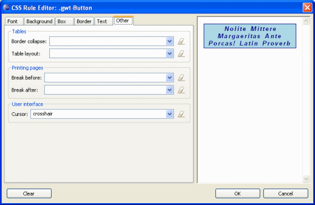 |